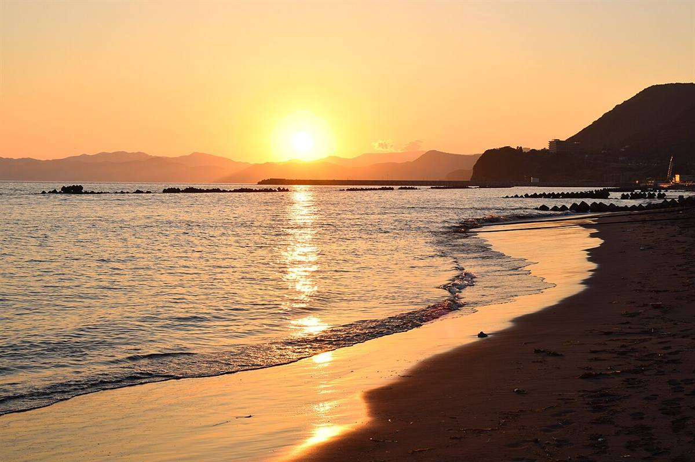
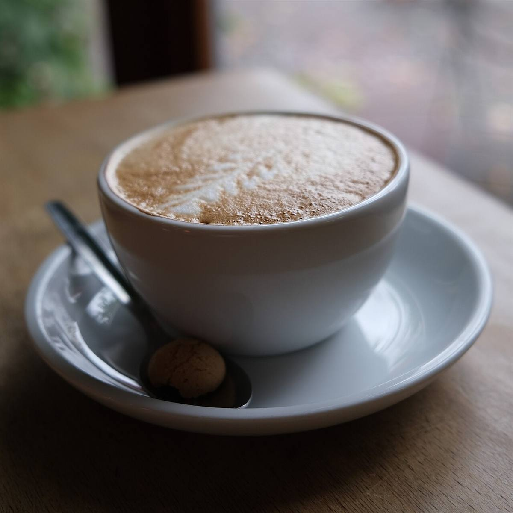
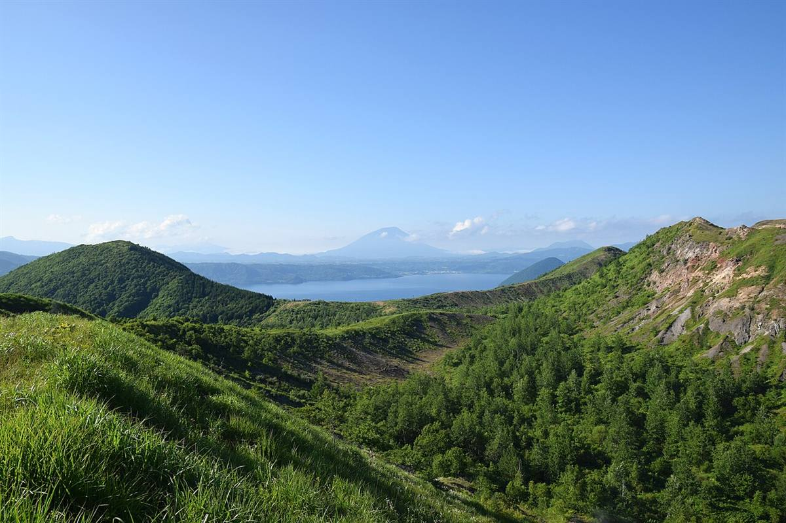
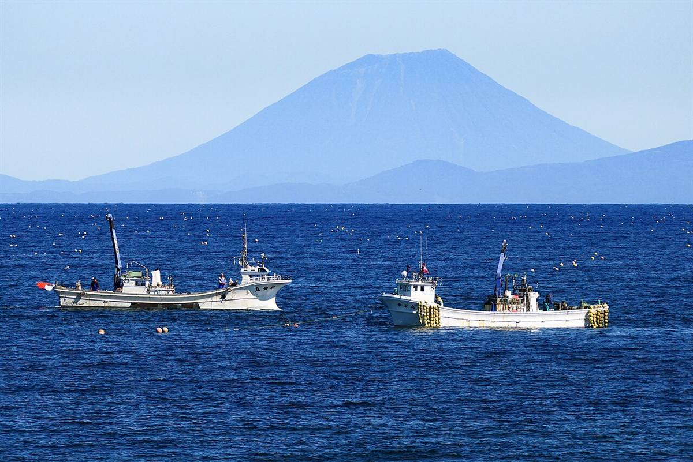

Cafe de maggy
北海道伊達市竹原町にある、カフェです。
詳しいお店の情報は準備中です。ご不明な点は、お電話またはInstagramからお気軽にどうぞ。


ひと息つく時間を。
一杯のコーヒーと、少しだけ静かな時間。立ち寄ったときに、ほっとひと息つける場所であれたら。そんな気持ちで、カフェのご案内をまとめました。
これはサイト制作側のご案内文で、お店の理念ではありません。
伊達のまち
伊達市は北海道の南西部、噴火湾(内浦湾)に面したまちです。北海道の中では比較的温暖な気候といわれ、「北の湘南」と呼ばれることもあります。近くには有珠山や昭和新山といった火山の景色も広がります。

